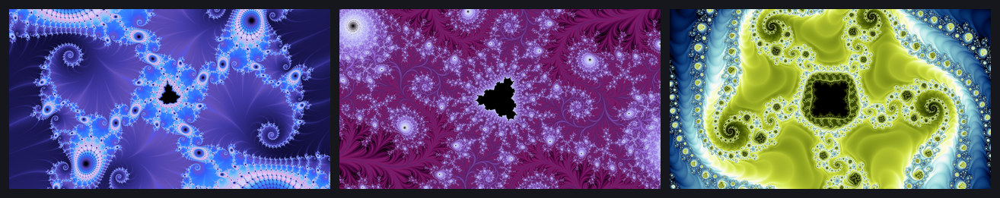
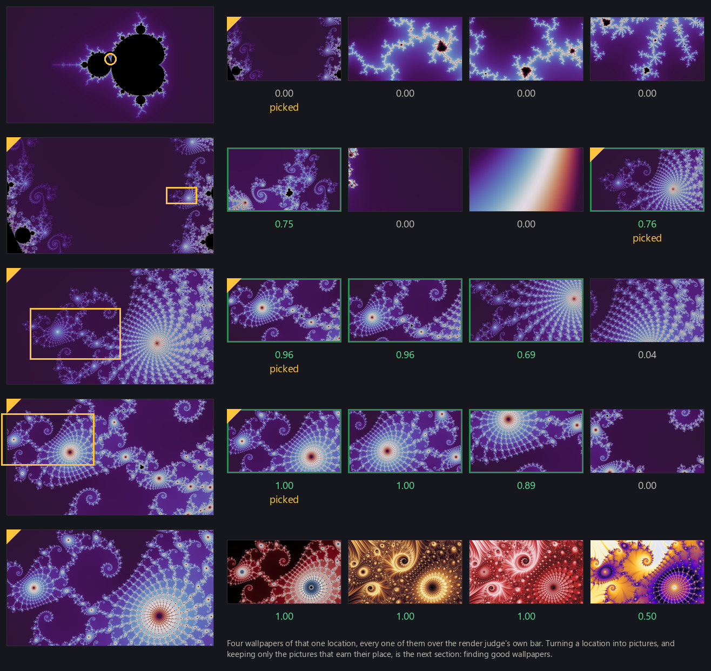
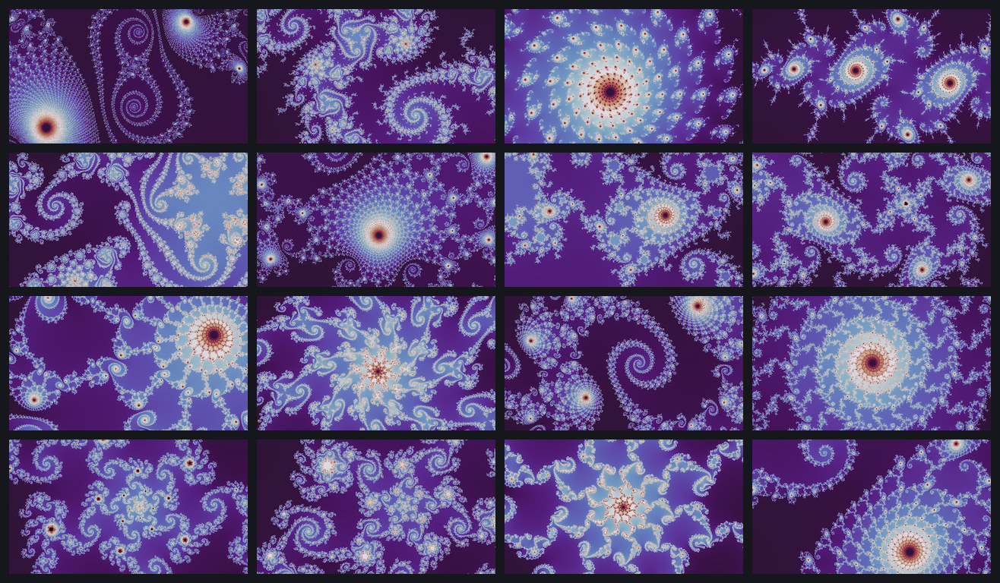

Rendering modes showed the many ways to render a beautiful location in a fractal. This page is about finding the locations themselves. A location is the geometric half of a wallpaper: a fractal family with its constants fixed, together with a frame in the complex plane, given by a center and a width (the height follows from the project's fixed aspect ratio). Color is deliberately absent. A location is chosen on its geometry alone, before any rendering mode or palette is assigned to it, and finding good wallpapers is where those choices get made.
What makes a location good
There is no single geometric definition of a good wallpaper location, and in the end it is an aesthetic call. A view that is too busy for one person is delightful to another. A lone filament crossing open space might be dull in a gallery but exactly right on a desktop, where sparse geometry leaves room for icons and text, while an intricate spiral that prints beautifully can be exhausting behind an already busy screen. Familiar neighborhoods such as Seahorse Valley and Elephant Valley are well-known examples, but they are tiny slivers of the territory worth exploring. The six pictures below run from a frame that is mostly empty to one carrying detail at every scale. They are finished wallpapers rather than bare geometry, and I rated all six at the top of the wallpaper scale. Which of them are too sparse, too busy, or just right is still personal preference.

The pipeline's working definition of good is my own taste, applied to a large set of locations. As the project runs, I rate locations by hand on a four-point scale, from junk to exceptional wallpaper material. Each judgment looks at several differently-colored renders of the same location, because the thing being rated is the geometry. The question is not "is this picture good as rendered" but "could this place make a good wallpaper across the many rendering modes and palettes available to it." Those ratings are the raw material for the location judge, a small neural network trained to predict the same scale (see training judges); here are a few examples from each category:

Guided search
Escape-time fractals established the narrow band where interesting detail lives: deep inside a set nothing escapes and the image is black; far outside everything escapes at once and the image is a bland gradient; the structure worth looking at crowds the boundary. But the boundary is not itself the answer. Most boundary views are either nearly empty (one filament crossing a void) or chaotic at every scale, with nothing for the eye to hold. Views I rate highly are rare, and they cluster: a spiral worth framing tends to sit in a neighborhood of other spirals worth framing. Seahorse Valley is a classic example.
A sampling experiment gives a rough measure of that rarity. Below are viewports drawn at random along the boundary, kept only if they pass a crude complexity check: not mostly interior, not already escaped to blandness, something actually happening in the frame. Even with that filter, I rated almost all of the survivors as mediocre at best, and that pattern held across more than a hundred such draws.

Rarity plus clustering is the signature of a search problem, and a search needs three things: places with some reason to be promising to start from, a way to move locally, and a valuation function that tells better from worse. This project's valuation function is the location judge above, and its search is a guided walk: thousands of frames explored per run, descending toward structure and away from both emptiness and chaos.
Minibrots
Escape-time sets have a wonderful property: they contain infinitely many miniature copies of themselves, at arbitrarily small scales. For the Mandelbrot set we call these copies minibrots, and the multibrot parameter planes carry analogous copies of their own. Two facts make them special to a search. Each copy has a distinguished center, its nucleus, a point whose orbit repeats in a perfect cycle. That makes the nucleus the root of an equation Newton's method can solve, so a minibrot is not just a shape but an addressable coordinate at a known scale.
Concretely, write the iteration as fc(z) = z2 + c (zd + c for a multibrot) and start it at z = 0. A copy of period p has its nucleus at the c where the orbit returns exactly to zero after p steps, so the nucleus is a root of gp(c) = fcp(0), a polynomial in c. The period is not assumed but read off the orbit: |zk| dips small wherever k is a multiple of a containing copy's period, so one orbit pass at the guess ranks the candidates, and Newton is tried on the divisors of the best few, smallest first. Newton's method then solves for the root: c ← c − gp(c) / gp′(c), with the derivative accumulated alongside the orbit as z′ ← 2zz′ + 1 in the quadratic case and z′ ← d zd−1 z′ + 1 in general. From a guess near enough to a copy it converges to the solver's own working precision, sixty decimal digits rather than the double precision the frames are drawn in, and most guesses are not near enough to anything. The unknown is the constant c itself. What comes out is an exact center, together with an estimate of the copy's characteristic scale; how wide to make the frame around it is a separate question, answered later.
I rate the filament and spiral structure in the halo around a copy highly, more often than the copy's own interior, so minibrots tend to sit near locations worth framing.

The walk
Each fractal family gets its own walk, and a walk is not one path but a growing forest of frames. Its roots are starting frames, and where they come from depends on the family. The parameter planes (the Mandelbrot set and its multibrot cousins) start from stored seed views derived from solved nuclei, plus each plane's home view. The degree-2 Julia family and the parameterized phoenix families have tracked pools of constants, accumulated from earlier discoveries: the atlas idea from escape-time fractals made literal, the Mandelbrot set as a map of all Julia sets. The higher-degree Julia families have no such pool, and their roots are manufactured during a run by the twin channel described below. Locations already rated well can re-enter the search at their recorded viewports, and the one plane whose constants cannot be varied at all is supplied instead with structurally screened sampled viewports. These channels are interleaved rather than ranked. Proven material exploits neighborhoods already known to be good and carries most of what a run admits, and fresh roots are still worth their cost, because they are what opens territory nobody has looked at yet.
From those roots the walk grows trees. The frontier is a priority queue of frames; the walk repeatedly takes the most promising one it knows about and expands it. (Every frame shares the project's fixed aspect ratio, which is why a center and a width fully specify one.) One expansion runs in five stages.
Render cheaply. Each candidate is drawn small and fast at the walk's node size, one field sample per pixel, in the standard smooth recipe and a fixed neutral palette. That one image does double duty: it supplies the structural measurements below, and if the frame survives them, it is exactly the picture the location judge scores. Nothing is rendered twice.
Propose children. Four candidate child frames are drawn inside the parent, each zoomed to between 35% and 50% of its width. Most are pointed at foci: blur the smooth field at several radii and keep the peaks that survive every blur. A peak that persists across scales is spatially coherent structure rather than one bright pixel, and the survivors are kept spaced apart so the four candidates don't pile onto a single feature. The remainder are placed at random or toward raw detail density, as insurance against the focus-finder's blind spots.

Gate. Structural checks throw out the hopeless before the judge ever sees one: too much interior (a mostly-black frame), instant escape (the whole frame gone in a few steps, the bland far-exterior signature), a flat field with no usable range, and frames where too few tiles carry any edge detail.
Score. The judge scores the rendering the gates just examined, always in the same neutral palette, so it compares geometry and never coloring. It returns the probability that the view would be rated at least a 3 on the four-point scale above. Two cuts act on that number. Above the admission bar the frame is admitted: recorded as a find and placed on the frontier. Between the two bars it is expandable, a stepping stone the walk may explore through but never a find. Below the expansion bar it is refused. The heights of those bars are operating policy on one model's score scale rather than calibrated aesthetic constants: when the judge was last retrained, they were restated to preserve the volume of frames admitted and refused, not reinterpreted as new probabilities. One allowance keeps the parameter planes viable: a plane descent starts wide and bland before it gets good, so a configurable number of early rungs get a waiver of the expansion bar rather than dying at the top.
Prioritize. A frame's place in the queue is its judge score, plus one random draw made once per frame, plus a slight bonus for depth. The random term is drawn from a Gumbel distribution, which is what turns a score-ordered queue into sampling in proportion to score: without it, one high-scoring lineage would deterministically own the frontier. Expansion runs in batches of eight, and two shares of each batch are reserved: a quarter for roots that have never been touched, and a couple of slots for frames the reframing operators below proposed, so neither newcomers nor reframings wait behind an established frontier. Slots a reservation cannot fill go back to ordinary order in the same batch. An ordinary root is capped at twelve expansions. The pinned plane gets a larger budget, because it cannot make replacement roots by varying a constant the way every other family can. Without the reservations and the cap, the handful of richest roots would starve everything else.
Within the walk, the judge steers but never drives: it cannot move a frame or propose one, only reorder the queue and decide each candidate's fate. Where the camera can go is decided entirely by the geometric proposal rules above. Elsewhere in the pipeline the same judge does get asked to choose among framings that have already been generated, which is a different job. What admission is for comes later: admitted locations are the standing stock that rendering and selection draw from (finding good wallpapers, gallery curation).
Every frame the walk scores goes into its ledger, refusals as well as finds: the family with all its constants, the center and width, the fate the frame earned, and the judge's score behind it. The ledger is append-only, and it is the walk's actual product. Nothing downstream ever repeats the search. Rendering, palette choice and curation all draw on the frames it admitted. The ratings are not in it: those accumulate in a separate store of hand labels that the judge is trained on. Later runs draw their roots from both, from the locations I have rated and from the locations earlier searches admitted.

Reframing a find
Minibrots looked like the shortcut to skip the search entirely. First-principles methods exist for enumerating them directly, and my hope was that a list of minibrots would be a list of great seed locations. It failed: locations found that way were almost universally bad. The complex plane holds unimaginably many minibrots, and nearly all of them turn out to sit in dull neighborhoods. What worked instead was the opposite direction: find minibrots near views the walk already likes, and use them to recompose the camera. A reframing inherits the quality of whatever triggered it, which is exactly why nearby-minibrots works and cold enumeration does not.
That idea is packaged as three reframing operators, each triggered when a frame the walk has chosen to keep exploring (admitted or expandable) shows signs of a minibrot. Each is easiest to see in the figure below.
snap_to_nucleus recenters exactly: solve for the nucleus with Newton's
method and put it at the center of the frame. The solution is accepted only when the
nucleus lies close enough to the triggering frame, measured against the frame's own width,
which is why most attempts are refused and why the operator cannot turn a local correction
into a jump to an unrelated component. A snap is a correction, not a teleport.
lateral_to_sibling steps sideways: probe a ring around the current minibrot
for a neighboring one at comparable scale, and frame that one instead.
expand_neighborhood widens the net: sweep the surrounding disc for
minibrots at the current scale or below, and propose the best two.

Inside the walk, a successful reframing is a move rather than a find. The frame an operator builds goes onto the frontier as a node, and it is never scored as a candidate itself. Only the ordinary children drawn below it pass through the gates and the judge. That is why a reframing can pay off even when its own view is mostly taken up by the copy's black body: what it buys is a better place to descend from. The frames it proposes are sized outward on purpose, never at the copy's own size, because the payoff of a minibrot is its halo rather than the copy.
Reusing previous finds
Fractals contain essentially unlimited structure, but quality clusters tightly. So the supply strategy runs both directions at once: most of the effort explores variations and deviations around known-good seeds, while a steady share of fresh roots keeps hunting for quality nowhere yet on the map. A run reads whatever map exists when it starts, and never waits on new labeling.
The atlas idea pays a second dividend because of the Mandelbrot-Julia connection. When the walk admits a parameter-plane location, its center c is by definition a Julia constant, and by the neighborhood principle from escape-time fractals, a Julia set inherits the character of where its c sits. The higher-degree Julia families are the ones that need this, having no tracked pool of their own: the center of an admitted degree-d plane location becomes the fixed c of a degree-d Julia root. That is the twin channel. It is primed from locations already on the books and can also take new plane admissions during the run that produces them. Degree-2 Julia sits out, because it already has a separately screened pool.
Recycling needs one restraint. Two nearby c values give two nearly identical Julia sets, so a new twin is skipped if its c lies within a certain radius (0.032 units) of one already accepted for the same family. That radius is a cost dial, not a boundary in the mathematics. When the project measured it, the near-duplicate rate fell smoothly across five decades of separation with no knee to derive a threshold from, so the radius simply sets how much near-duplication a run is willing to pay for.
The reframing operators earn a second life outside the walk, where their output is treated differently. Run as a channel of their own, they fire at high-rated parameter-plane locations already on the books: sweep each one's neighborhood for minibrots, solve every nucleus found, and offer each at a ladder of framings wider than the walk's, aimed outward as ever. Here the judge does score the framings and the best one is recorded as a new location in its own right, centered exactly on the nucleus. Later generations can fire again at nuclei that earlier generations promoted, so the channel grows a chain of derived neighborhoods rather than returning forever to the same original seeds. Because every seed already earned a high rating, the channel inherits quality the way an in-walk reframing does, and it has become one of the strongest sources of good locations the project has.
One seeded chain, end to end, shows the whole page in miniature. The figure below walks
it frame by frame. A root is placed at a location I had rated highly. Two zoom steps
descend into its filaments. Then expand_neighborhood spots a minibrot far
below the current scale, and the ladder's widest framing recomposes the camera around it.
Two more zoom steps refine the crop, and the final frame is admitted with a strong score
from the judge.

Where the walk stops
A walk has three stopping conditions. First, a frame that gets too narrow stops: the walk enforces a minimum width of 10⁻⁹. That is a chosen search policy rather than the point where the arithmetic fails, and at the walk's node size there is still comfortable room left in double precision below it. Pushing the same descent deeper would be easy engineering, and the reason not to is economic as much as numerical: the scales below that minimum are better reached by starting from a precisely solved nucleus than by spending a shallow walk's budget traversing everything above them. Rendering past the point where double precision does fail takes genuinely different machinery, and that story has its own page, deep zoom. Second, an ordinary root that has been expanded twelve times retires, so no root monopolizes a run, while the pinned plane runs on a larger budget for the reason given above. And finally, the run itself has a budget; when it ends, or when no frame on the frontier can still be served, the walk stops.
Examining walk quality
Walks are far from interchangeable: the reservations and the cap in the Prioritize stage exist precisely because a few rich roots would otherwise consume a whole run while others sit untouched.
Reading the ledger answers two different questions: does the walk find good locations, and does it find them efficiently?
The figure below splits one run's roots by origin. In that run, roots seeded from locations I had already rated well almost all led somewhere: 98% of them admitted at least one frame, against 22% of the roots drawn fresh from the boundary. The gap is not a matter of persistence, since both kinds of root were walked to about the same median depth before the walk gave up or ran out of budget. A good neighborhood is productive; an arbitrary one usually is not, however hard it is searched. This is why the pipeline invests in seeding (Reusing previous finds, above) rather than in walking longer.

The walk's refusals hold up to inspection: looking through them, the frames it turns away are the flat, exterior and interior-dominated ones the gates were built to exclude. Where it is looser is in what it keeps open: a frame judged worth expanding further often leads nowhere, so budget is spent below frames that a stricter reading of the score would have closed. The current trade is this: the gate is tight and the promotion is generous, and the cost of that generosity is walked frames, not bad admissions.
The location judge supplies every learned decision on this page: the score behind each candidate's fate, and the score term that orders the frontier. Training judges is about where it comes from, the ratings and the training behind it, and what a small network can and cannot be trusted to know.
